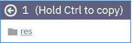

Resource tree structures in the Resources Tree page can be
configured by moving and copying the resources using the drag and drop feature.
About this task
Each row on the Resource Tree page represents a resource. Resources
that are grouped under other resources are referred to as subresources. You can edit
your organizational group nesting by moving and copying existing resources. Components and agents
within a resource tree are also moved and copied along with the resource.
Procedure
-
Open the Resource Tree page.
-
Click and hold the mouse in the first column of the resource that you want to reposition.
This column has small dots that are arranged in a box.
-
Move a resource by dragging the resource to a new location.
While you are dragging the resource, a window appears to show the resource, as shown in
the following figure:

The left arrow sign (←) indicates that the row can be moved to the new location. The
minus sign (–) indicates that row cannot be moved to the location.
-
Copy the resource by holding the Ctrl key while you drag it.
-
Position the pointer over the row where you want to copy the selected resource.
While holding the Crtl key, the plus sign (+) indicates the resource can be copied to the
location, otherwise it shows minus sign.
-
Release the mouse button.
The resource and any subresources that are associated with it are copied beneath the target
row.
When you copy a resource with a name that matches with an existing resource in the target
location, the following window is displayed:
-
Save the resource with a new name.
Results
The resources are moved or copied to the new location.
Click the expand icon to expand the tree.